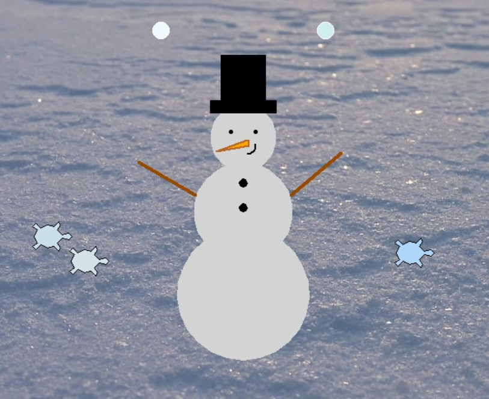
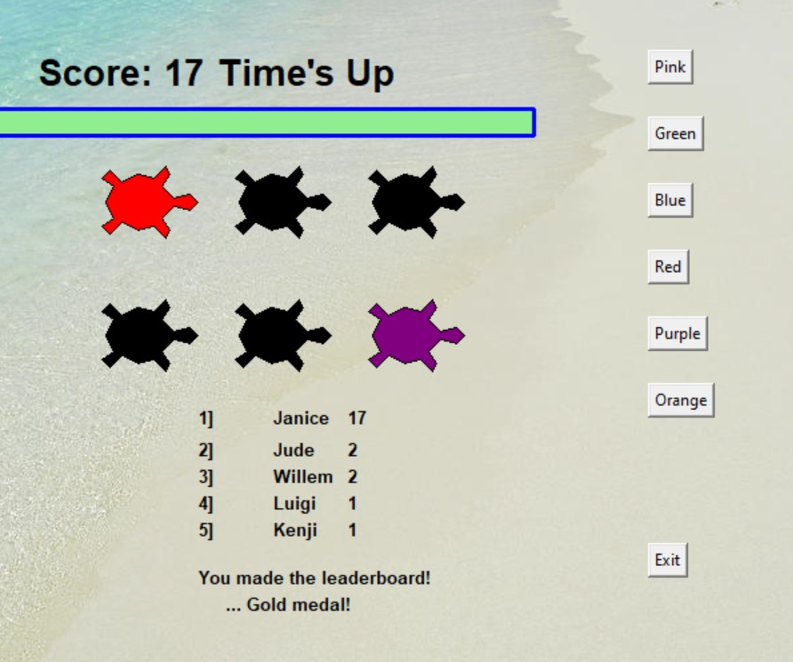

Home
Portfolio
About Me
This is my Portfolio Page!
Snowman Builder 1.1.9 Project

This game allows the user to build a snowman to their own liking by answering a set of questions. The user can customize the color, size, and accessories the snowman can have. We used both general turtle commands and conditional statements(if and while loops) from the PLTW lessons we went over to create the game.
Whack-A-Turtle 1.2.5 Project
